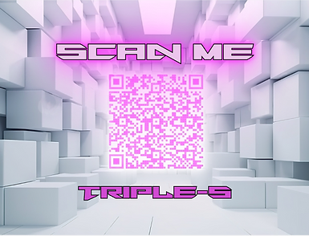
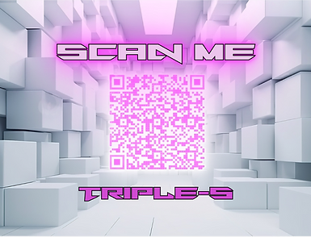
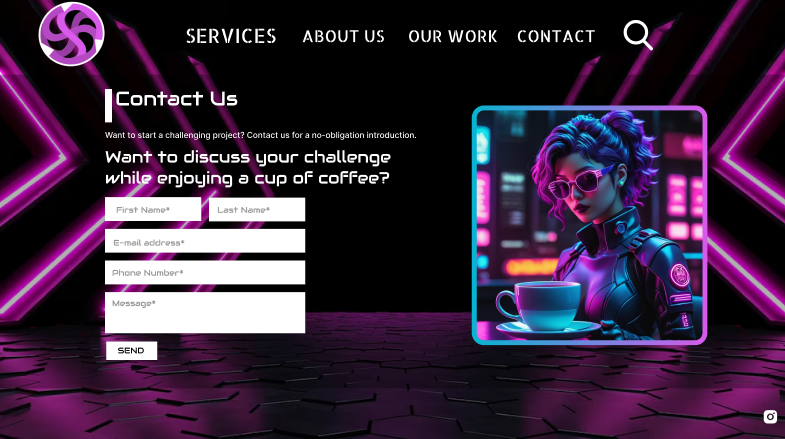
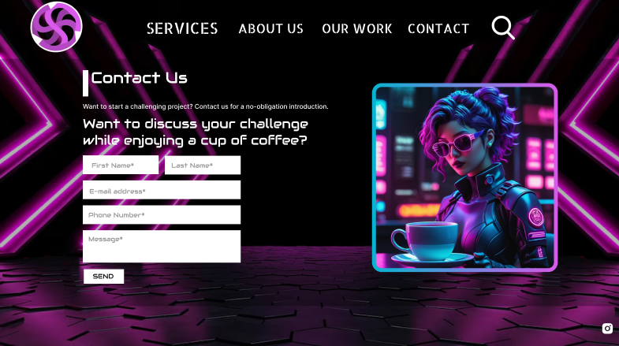
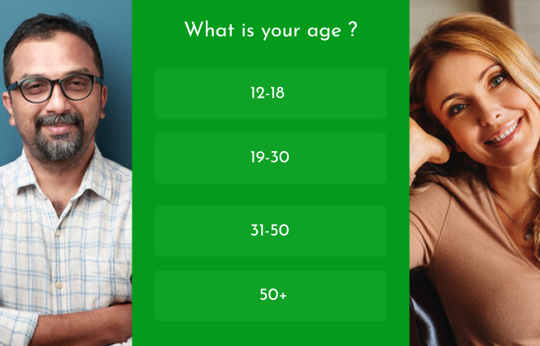
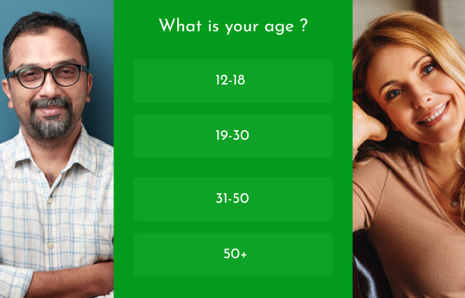

After we finished the Contract Agreement it was
time for us to work on the branding for our Group.
We went through a lot of different iterations.
Those, that you see
on the picture are all my
variants, the biggest one at the bottom is the one
that we agreed as a group to use it as our Final
Logo for the company. At first i was
trying to
combine S's in the design that can remind of
something (snakes), that is why we also went for
the green at the beginning, because we were
expecting to go
green theme for our company to look
nature-friendly, securing and growing. But, after I
asked for feedback from other students to see what
they think about it I
figured that snakes aren't
the best allegory for the company that creates
websites since it reminds of something poisonous,
betraying or something related to
medicine. That is
when we wanted to make something different. We
agreed with the group to try new approach and
combine our interests into new design and concept.
We found out that we are very different group with
very different interests. That's why, since we are
internationals and have different interests I've
tried to
make a Logo with planet but it went not so
well and, in the end, after we got feedback from
teacher that it takes too long for us to create a
Logo we agreed to
stay with spiral-looking circle
from S's I made previously. But, I decided to
improve on it. After getting feedback from the
teacher saying that I should try
to make it look
like an infinite stairs that doesn't have start and
end I combined colours as well as their shades in
such manner that it looks like an infinite
loop.
The 3 S's at the bottom of the Logo stands for our
group name "Triple-S" and is made in futuristic
style that was one of the things that was common
for us
that we all liked. The purple shade was an
idea from another student from my group, Danylo, he
showed me list of colours and their psychological
meaning where
we chose the one that suits our team
the best, which is purple, because it is futuristic
and ambitious, just like we are. Also, I need to
mention that first
iterations of Logos were made in
Figma but, after receiving feedback that I need to
use Professional tools I made the last one
completely in Adobe Illustrator.
This Assignment
relates to these Learning Outcomes: LO1, because
I've created a concept in Figma and translated it
into a complete finished product in Adobe
Illustrator applying visual design techniques and
principles as well as using examples from Infinite
Stairs; LO3, because I had around 15 iterations
with
different approaches and feedback as I
explained higher; LO4, because I applied methods
for colours from professional fields of psychology
not only for
purple colour, but also for the shades,
the deeper the S goes, the darker it becomes
creating an infinite loop bottom to top. Here is
the link to all of
the designs: Logo Designs.
Link to both Group Feedback and Personal Feedbacks I was receiving from teachers:Personal Feedback, Group Feedback. Here is
the link to the document about psychology of colours: Colour Psychology.


.jpg)
.jpg)


 



 



 
